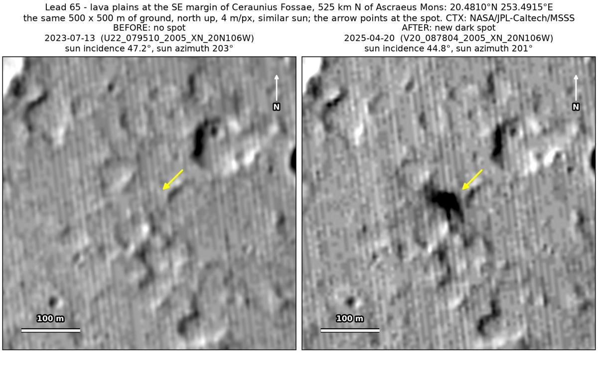
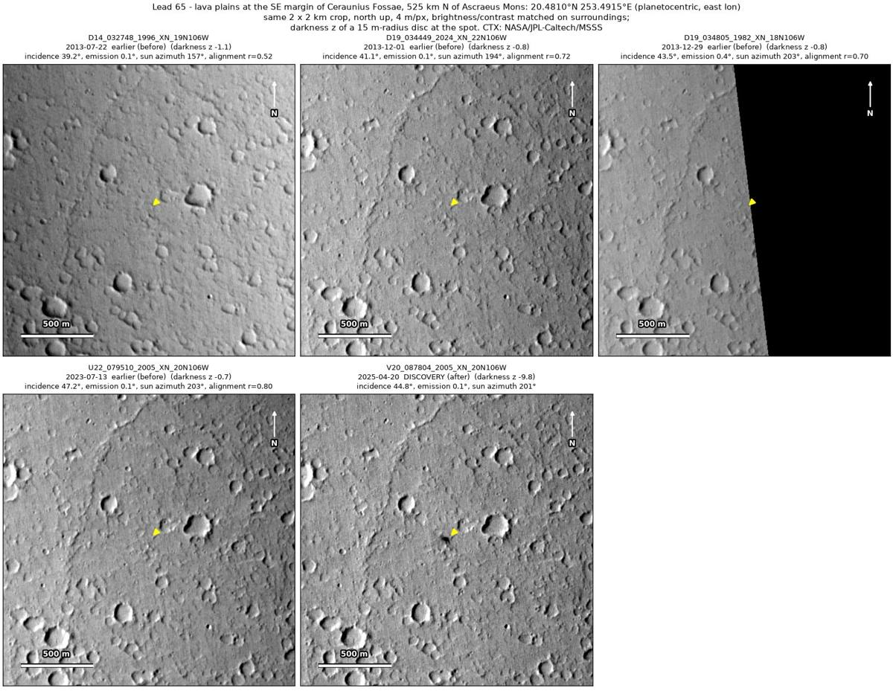
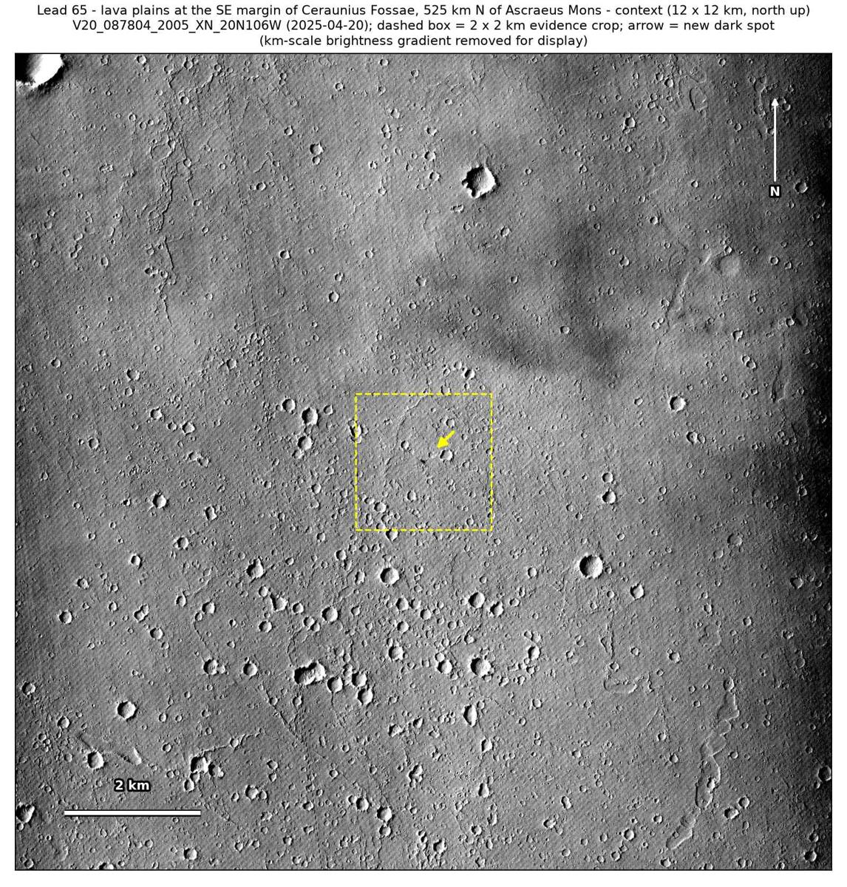

Professor of Mathematics
Paata Ivanisvili
Department of Mathematics, University of California, Irvine

← Possible new impact sites on Mars
Candidate 65: Lava plains at the south-east margin of Ceraunius Fossae, 525 km north of Ascraeus Mons
Promising · roughly 70%

What changed. A compact dark spot about 34 m across appeared beside a small knob on cratered lava plains at the south-east margin of Ceraunius Fossae between July 2023 and April 2025. It shows in one CTX image so far.
Why it may be a new impact. Three earlier images, from 2013 and July 2023, show no spot there. The July 2023 image was taken under the same sun as the April 2025 one and lines up well with it, and a shadowed crater 300 m to the east-north-east shows in both. The spot lies on the knob’s sunward side, so it is not the knob’s shadow, and a compact dark spot appearing on lava plains is how the blast zone of a small new crater can look.
- Location
- 20.481° N, 253.491° E (106.509° W)
- Absent
- 22 July 2013, 1 December 2013 and 13 July 2023
- Present
- 20 April 2025
- Size
- Compact dark spot about 34 m across (44 × 32 m)
- Confidence
- Promising candidate: roughly 70% likely to be a new impact.
- Caveat
- Only one image shows it so far, and only a second image can rule out a short-lived mark: a dust devil caught in the act, or ground freshly scoured by a dust devil, is possible, though there is no track. Dark material exposed by wind on the knob’s flank is also possible. No image from the high-resolution HiRISE camera covers it; the nearest ends 14.9 km away. Like every candidate here, it is unconfirmed: see the caveat.

